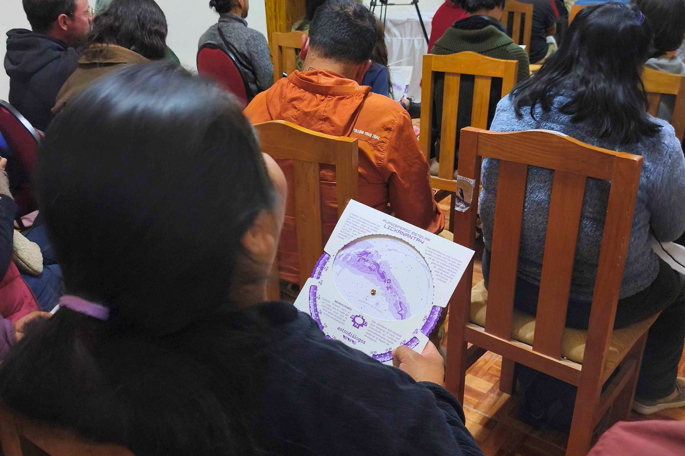
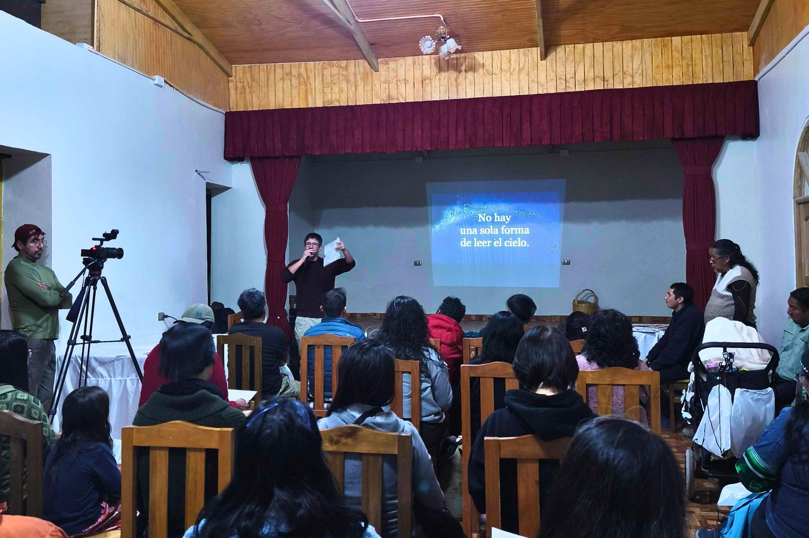
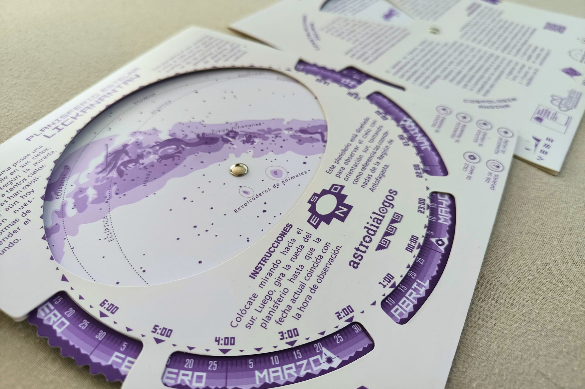
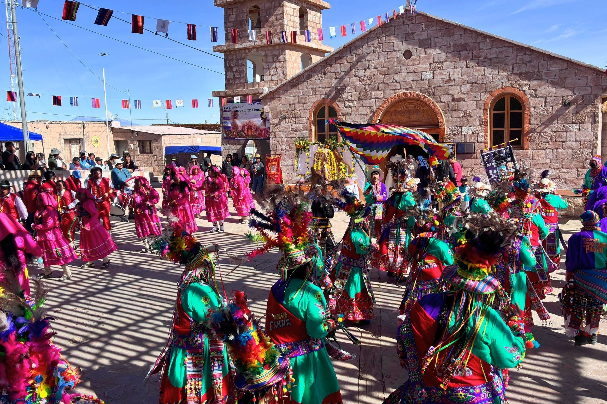
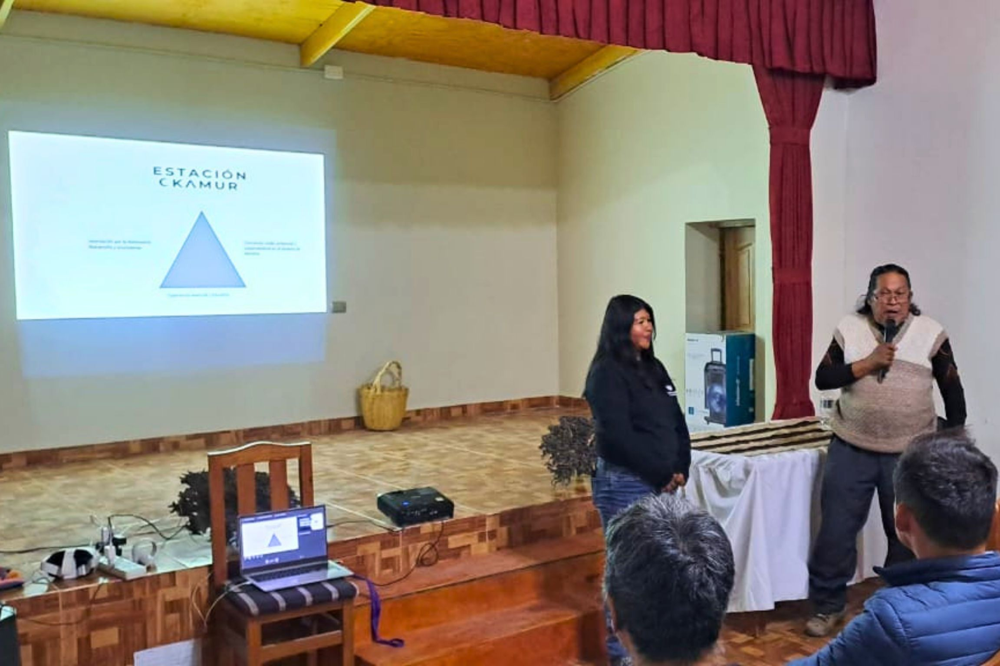

{kind=link}

Lanzamiento en Toconao
Presentación del primer Planisferio Astrodiálogos Lickan Antay.
Fundación Astrodiálogos, junto a colaboradores y representantes de comunidades Lickan Antay del territorio atacameño, presentó en Toconao el primer Planisferio Astrodiálogos Lickan Antay, una herramienta educativa que invita a reconocer el cielo desde una perspectiva situada en el territorio, integrando astronomía, memoria, patrimonio y diálogo intercultural.
El lanzamiento se realizó el viernes 13 de junio de 2026 en el Club Deportivo de Toconao, junto a la plaza del pueblo, en una jornada abierta que reunió a habitantes de la comunidad, estudiantes, educadores, investigadores y representantes de iniciativas vinculadas a la astronomía y al patrimonio local.

El planisferio permite orientar la observación del cielo nocturno desde la latitud del territorio Lickan Antay, integrando referencias astronómicas con elementos del paisaje, la memoria y los saberes locales. Más que un mapa de estrellas, este instrumento busca ser una invitación a mirar el cielo desde Toconao, reconociendo que la observación astronómica ocurre desde territorios habitados, con historia, lengua y cultura.
La jornada comenzó con una recepción de participantes y un bloque de experiencia inmersiva de realidad virtual, Ckunza Universo, orientado a introducir el diálogo entre astronomía científica y conocimiento lickanantay. Luego se realizó la charla “Vistas Astronómicas desde el Atacama”, a cargo del Dr. James Miley, astrónomo operador e investigador del Observatorio ALMA y del Núcleo Milenio YEMS.
Posteriormente se presentó la Estación Ckamur, abordando su proyección en el territorio y su vínculo con la astronomía y el patrimonio atacameño. La actividad continuó con la presentación del Planisferio Astrodiálogos Lickan Antay, donde se explicó qué es, qué representa, cómo fue desarrollado y de qué manera puede ser utilizado para reconocer elementos del cielo nocturno.
Como cierre de la jornada, las y los asistentes recibieron kits de observación y se trasladaron a un punto de observación astronómica, donde utilizaron el planisferio de manera práctica para orientarse e identificar el cielo de Toconao.
El Planisferio Astrodiálogos Lickan Antay es el resultado de varios años de trabajo colaborativo entre Fundación Astrodiálogos, educadores, cultores, dirigentes comunitarios y colaboradores Lickan Antay del territorio atacameño. Su desarrollo se enmarca en una línea de trabajo más amplia orientada a generar espacios de encuentro entre astronomía contemporánea, educación, patrimonio y conocimientos locales sobre el cielo.
Más que una herramienta para identificar estrellas y constelaciones, el planisferio busca reconocer que distintas comunidades han desarrollado, a lo largo de generaciones, formas propias de relacionarse con los ciclos celestes, el paisaje y la memoria.
Las partes declaran que el Planisferio Astrodiálogos Lickan Antay es fruto de una colaboración basada en el respeto, el diálogo intercultural y el reconocimiento del vínculo profundo entre cielo, territorio, memoria y educación.
Fundación Astrodiálogos reconoce el rol central de las comunidades y personas Lickan Antay participantes en el sentido cultural y territorial del proyecto. Asimismo, las comunidades y representantes participantes reconocen el rol de Fundación Astrodiálogos en el desarrollo, acompañamiento, articulación y resguardo educativo, editorial y ético del material.

Para el Núcleo Milenio YEMS, esta actividad representa una oportunidad para fortalecer la relación entre investigación astronómica de frontera, educación científica y comunidades locales. En un país donde algunos de los observatorios más importantes del mundo se ubican en territorios indígenas y rurales, iniciativas como esta permiten ampliar la conversación sobre la astronomía, incorporando perspectivas territoriales, culturales y educativas.
El lanzamiento del Planisferio Astrodiálogos Lickan Antay se enmarca en un esfuerzo colaborativo por crear materiales que permitan mirar el cielo desde Chile no solo como un laboratorio natural para la ciencia, sino también como un espacio de memoria, pertenencia y encuentro.
Galería de imágenes

Presentación del primer Planisferio Astrodiálogos Lickan Antay.
Una jornada comunitaria en torno a astronomía, memoria y patrimonio.

El planisferio fue desarrollado mediante una colaboración basada en respeto y diálogo.

Uso del planisferio como herramienta de orientación y aprendizaje astronómico.
{kind=link}
{kind=link}
{kind=link}